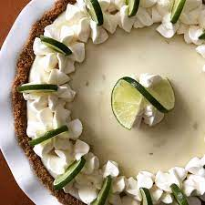

Glorious Key Lime Pie

What's the goal?
We are going to make a delicious key lime pie - perfect for breakfast, lunch or dinner!
It's so easy to make -all you need is condensed milk, digestive biscuits, lime, a sprinkle of ginger and some spare lime juice!
Ingredients
- 300g Digestive biscuits
- 100 grams of butter, melted
- 2 large / 3 medium egg yolks
- Juice and rinds of 3 limes
- 1/2 teaspoon of ginger
- 1/2 teaspoon of cinnamon
- 500ml can of condensed milk
- 300ml double cream
Steps
- Preheat oven to 140 degrees
- Crush the biscuits
- Add ginger and cinnamon to the powdered mix
- Grease cake tin with butter
- Add crushed biscuits and press down to create a firm base
- Place in oven for 5-10 mins. while preparing the filling
- In a seperate bowl, add condensed milk, egg yolks and juice of 3 limes and mix well
- Gently grate lime peel and add to mix
- Add mixture to base and cover to chill overnight
- When ready to serve, add spare rinds to top to garnish, slap on some double cream and dig in!